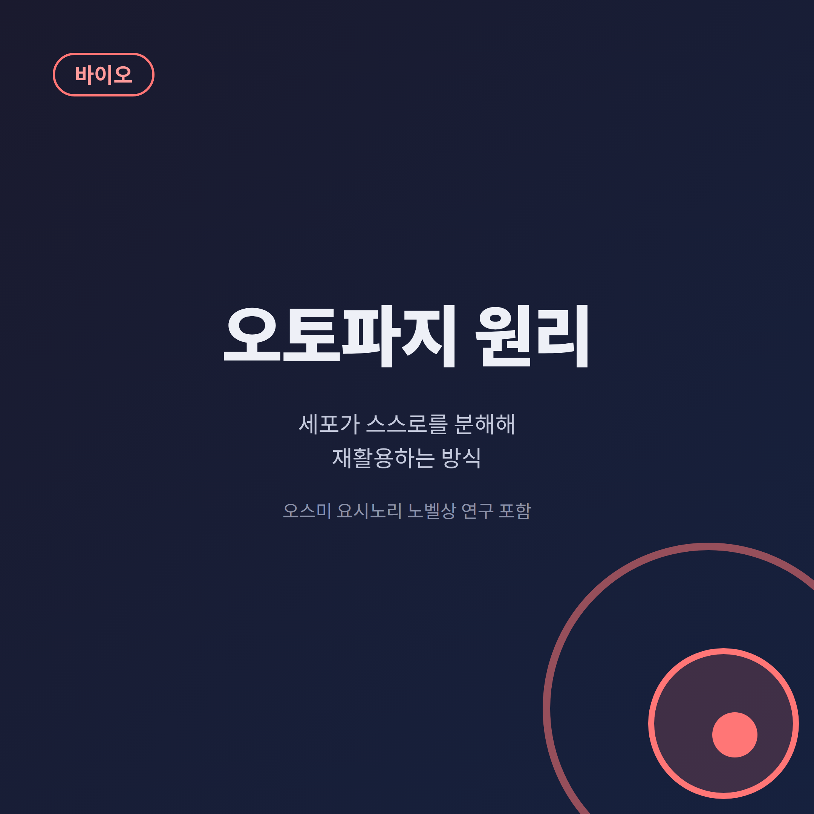
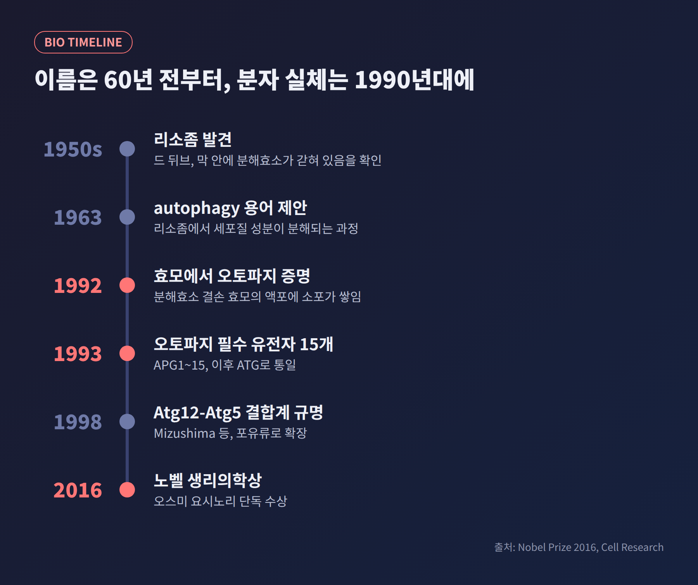
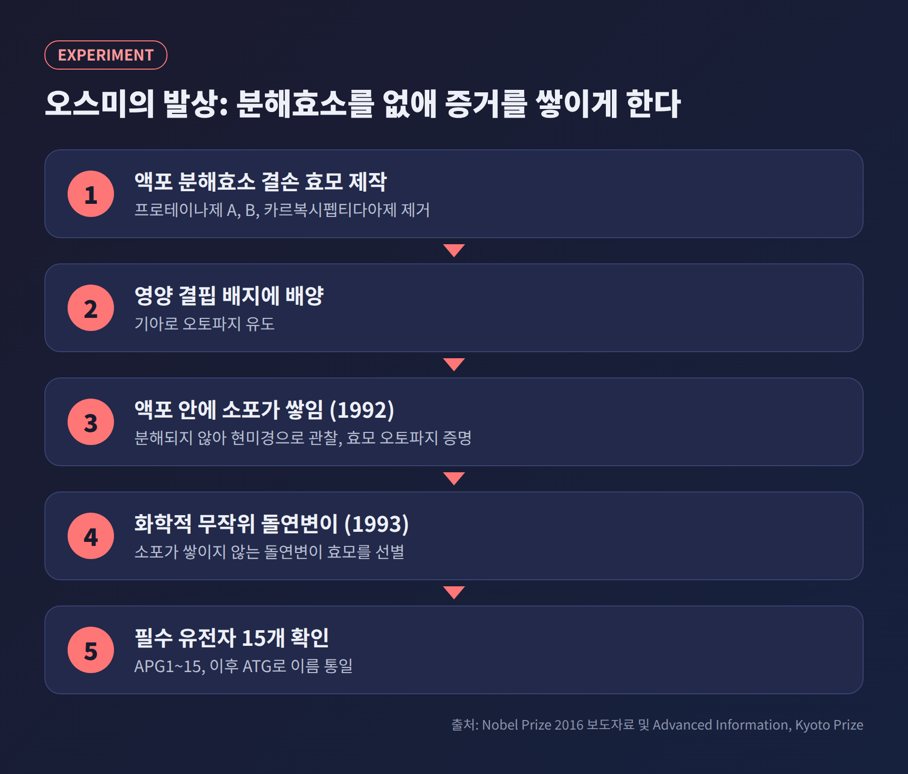
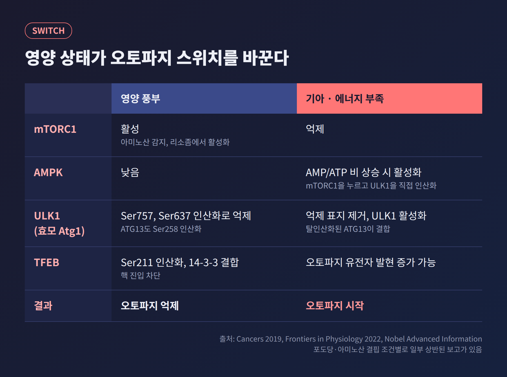
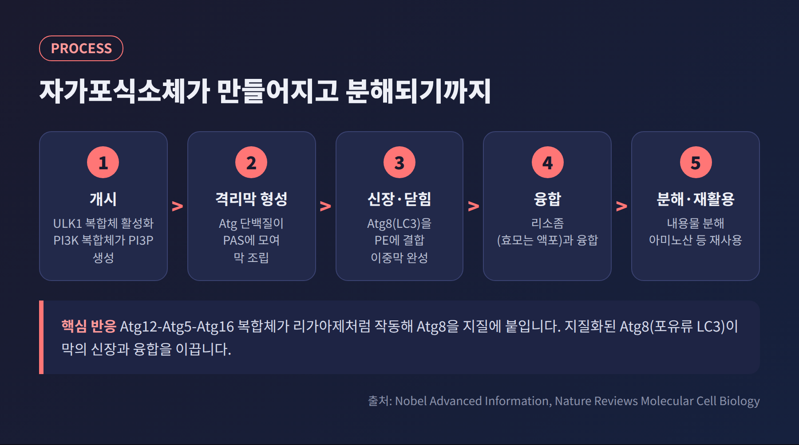
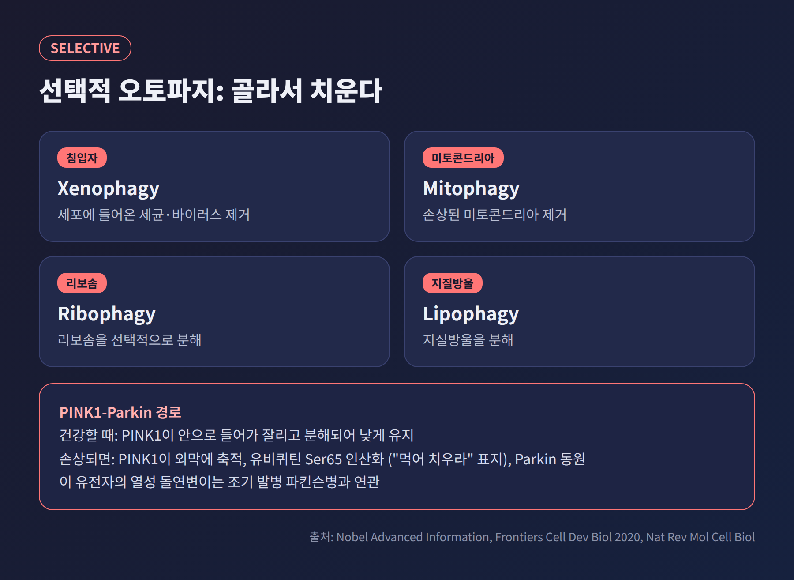
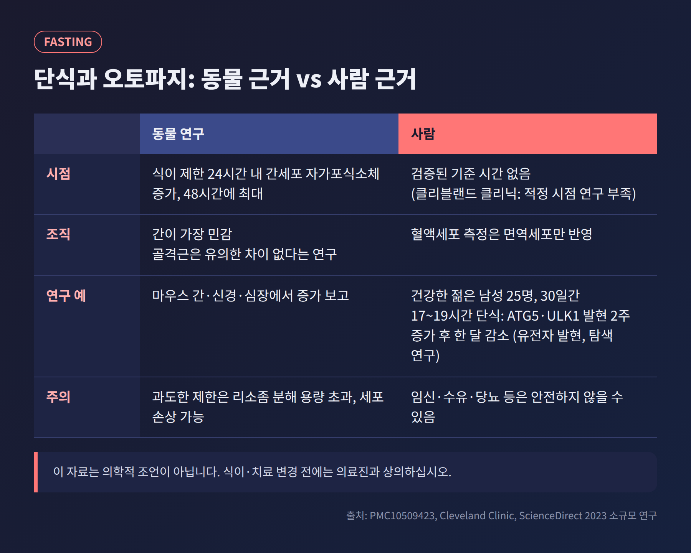

이번 글에서는 오토파지(자가포식)의 원리를 정리해 보겠습니다. 세포가 낡은 부품을 어떻게 포장해 분해하고, 그 재료를 어떻게 다시 쓰는지를 다룹니다. 2016년 노벨 생리의학상을 받은 오스미 요시노리의 효모 실험과 함께, 단식에 얽힌 오해까지 살펴봅니다.
핵심만 먼저 말씀드립니다. 오토파지는 세포가 자기 성분을 이중막 주머니(자가포식소체)에 담아 리소좀으로 옮겨 분해하고, 나온 재료를 재사용하는 과정입니다. 영양 센서인 mTORC1과 에너지 센서인 AMPK가 시작 스위치를 쥐고 있습니다. 사람에서 "몇 시간 굶으면 시작된다"는 기준은 아직 검증되지 않았습니다.
오토파지(autophagy)는 그리스어로 '자기'를 뜻하는 auto와 '먹다'를 뜻하는 phagein에서 왔습니다. 말 그대로 자기를 먹는다는 뜻입니다.
세포 안에서는 이런 일이 벌어집니다. 세포질 성분을 이중막 구조의 자가포식소체가 둘러쌉니다. 이 주머니가 분해효소가 든 리소좀으로 이동해 내용물을 분해합니다. 분해 산물은 버려지지 않고 새 세포 구성 요소의 재료가 됩니다.
노벨 재단은 오토파지가 "에너지를 위한 연료와 세포 구성 요소 재생을 위한 재료를 빠르게 공급"한다고 설명합니다. 그래서 기아, 감염, 배아 발생, 세포 분화 같은 상황에서 핵심 역할을 합니다. 망가진 단백질과 소기관을 치우는 품질관리도 여기에 속합니다.

출발점은 1950년대 초 크리스티앙 드 뒤브의 리소좀 발견입니다. 그는 간 조직 분획을 냉장고에 5일 두었더니 사라졌던 산성 포스파타아제 활성이 다시 나타나는 현상을 보고, 막 안에 효소가 갇혀 있다는 결론에 이르렀습니다. 이 구조에 붙인 이름이 리소좀이며, 그는 1974년 노벨상을 받았습니다.
1955~1957년에는 전자현미경으로 세포 안의 자가분해 장면이 관찰되었고, 1962년 애시퍼드와 포터는 간세포 리소좀 안에서 세포질 성분을 기록했습니다. 그리고 1963년 드 뒤브가 "autophagy"라는 용어를 제안합니다.
다만 그때까지는 현미경으로 본 풍경에 가까웠습니다. 어떤 유전자와 단백질이 이 과정을 움직이는지는 알려지지 않았습니다. 예전엔 모양만 알았고, 이제는 부품 목록까지 압니다. 그 전환점이 1990년대 초의 효모 실험입니다.
오스미는 출아효모를 택했습니다. 효모의 액포는 포유류 리소좀에 해당하는 분해 구획입니다. 그의 발상은 간단했습니다. 분해효소가 없으면, 세포가 집어삼킨 물질이 분해되지 않고 액포 안에 쌓여 현미경으로 보일 것이라는 생각이었습니다.
1992년 타케시게, 바바, 오스미는 액포 분해효소(프로테이나제 A, B, 카르복시펩티다아제)가 없는 효모를 만들어 영양이 모자란 배지에 두었습니다. 예상대로 액포 안에 세포질 성분이 든 소포가 빠르게 쌓였습니다. 효모에도 오토파지가 있다는 첫 증거였습니다.
이듬해에는 여기서 한 걸음 더 나아갔습니다. 화학 물질로 무작위 돌연변이를 일으킨 뒤, 분해효소가 없는데도 소포가 쌓이지 않는 효모를 골라냈습니다. 오토파지가 고장 난 효모를 찾아낸 것입니다. 1993년 FEBS Letters 논문에서 오토파지에 필수인 유전자 15개(APG1~15, 이후 ATG로 통일)가 보고되었습니다. 이후 연구를 거치며 관련 분자는 수십 개로 늘었습니다.
이 유전자들은 효모만의 것이 아니었습니다. 포유류에서도 상동 유전자가 확인되었고, 오스미는 2016년 노벨 생리의학상을 단독으로 받았습니다. 수상 이유는 "오토파지 기전의 발견"이었습니다.

오토파지는 필요할 때만 켜져야 합니다. 이 스위치를 쥔 것이 ATG1(포유류 ULK1) 인산화효소 복합체이고, 그 위에서 TOR가 영양 상태를 읽습니다.
노벨 재단 설명에 따르면 영양이 풍부할 때 TOR는 활성 상태로 ATG13을 과도하게 인산화해 복합체 조립을 막습니다. 기아가 오면 TOR가 꺼지고, 인산기가 떨어진 ATG13이 ATG1에 붙어 오토파지가 켜집니다.
포유류 세포에서는 더 세밀합니다. mTORC1은 ULK1의 Ser757, Ser637 자리와 ATG13의 Ser258 자리를 인산화해 ULK1을 눌러 둡니다. 영양이 부족해지면 이 억제성 표지가 제거되어 ULK1이 풀려납니다. mTORC1은 오토파지 유전자 발현을 이끄는 TFEB도 인산화해 핵으로 들어가지 못하게 붙잡습니다.
반대편에는 에너지 센서 AMPK가 있습니다. AMP/ATP 비율이 오르면 AMPK가 활성화되어 ULK1을 최소 네 곳에서 직접 인산화하고, TSC2와 RAPTOR를 인산화해 mTORC1은 누릅니다. Beclin1도 인산화해 VPS34 복합체의 활동을 키웁니다. 다만 포도당 결핍과 아미노산 결핍에서 이 상호작용이 다르게 보고되기도 해서, 아직 정리 중인 부분이 있습니다.

스위치가 켜지면 세포 안에서 막 구조가 조립됩니다. 효모에서는 Atg 단백질이 PAS(자가포식소체 형성 부위)라는 곳에 모여 막 형성을 조직합니다. 여기에 PI3K 복합체(Vps34, Vps15, Atg6, Atg14)가 PI3P를 만들어 필요한 단백질을 불러 모읍니다. 포유류의 Beclin-1은 효모 ATG6의 상동체입니다.
막이 길게 늘어나는 단계의 핵심은 유비퀴틴과 닮은 두 가지 결합 반응입니다.
첫째, Atg12가 Atg7과 Atg10의 도움으로 Atg5에 붙고, 여기에 Atg16이 결합해 복합체가 됩니다.
둘째, Atg8의 끝이 Atg4에 의해 잘린 뒤, 앞선 복합체가 리가아제처럼 작용해 Atg8을 인지질 PE에 붙입니다. 이른바 지질화입니다.
노벨 재단 자료는 "지질화된 Atg8이 자가포식소체의 신장과 융합의 핵심 동인"이라고 정리합니다. 포유류의 Atg8 상동체가 LC3이고, 형광을 붙인 LC3는 자가포식소체를 세는 표지로 널리 쓰입니다.
주머니가 닫히면 리소좀(효모는 액포)과 융합합니다. 내용물이 분해되고, 아미노산 같은 재료가 세포질로 돌아갑니다.

기아 때의 오토파지는 세포질을 무작위로 삼키는 비선택적 방식입니다. 그러나 평소에는 특정 대상을 골라 치우는 선택적 오토파지가 중요합니다. 어댑터 단백질이 화물을 알아보고 LC3에 이어 줍니다.
대표 유형은 네 가지입니다. 침입한 미생물을 치우는 xenophagy, 손상된 미토콘드리아를 치우는 mitophagy, 리보솜을 치우는 ribophagy, 지질방울을 치우는 lipophagy입니다. 바이러스와 세포 내 세균 중에는 이 방어를 피하거나 오히려 증식에 이용하는 것도 있습니다.
미토파지는 기전이 비교적 자세히 밝혀져 있습니다. 건강한 미토콘드리아에서는 PINK1이 안으로 들어가 잘리고 분해되어 낮은 수준을 유지합니다. 미토콘드리아가 손상되면 PINK1이 외막에 쌓여 활성화되고, 유비퀴틴의 Ser65를 인산화해 "먹어 치우라"는 표지를 붙입니다. 이 표지가 Parkin을 불러옵니다. PINK1과 Parkin 유전자의 열성 돌연변이는 조기 발병 파킨슨병을 일으키는 것으로 알려져 있습니다.

오토파지는 평소에도 낮은 수준으로 계속 작동합니다. 이 기능이 없으면 문제가 생깁니다. Atg5를 없앤 생쥐는 출생 후 첫날 안에 죽는데, 젖을 먹기 전의 기아를 견디지 못하기 때문입니다. 뇌에서 Atg5나 Atg7을 없앤 생쥐에서는 신경변성이 나타났습니다.
암에서는 양면성이 있습니다. 초기에는 위험한 분자를 치워 종양을 억제하지만, 진행된 종양에서는 스트레스를 견디게 돕는 쪽으로 작용할 수 있습니다. Beclin-1은 사람 유방, 전립선, 난소암의 50~70%에서 한쪽 대립유전자가 결손되거나 발현이 꺼져 있다고 보고됩니다. 같은 오토파지가 항암 치료에 대한 저항성에도 기여한다는 점이 까다롭습니다.
이 밖에 헌팅턴병 동물 모델에서는 mTOR를 억제해 오토파지를 높이자 독성이 줄었고, 크론병은 오토파지 단백질 유전 변이와 연관이 보고되었습니다. 다만 이런 결과가 곧바로 사람 치료로 이어진다는 뜻은 아닙니다.
이 대목에서 오해가 많습니다. 사실관계만 나눠 보겠습니다.

동물 연구에서는 식이 제한 24시간 안에 간세포의 자가포식소체가 늘고 48시간에 최대가 된 결과가 있습니다. 조직별 차이도 큽니다. 간이 가장 민감하고, 골격근에서는 유의한 차이가 없다는 연구가 있습니다.
사람은 사정이 다릅니다. 클리블랜드 클리닉은 동물 연구에서 24~48시간 단식 사이에 시작될 수 있다고 소개하면서도, 사람에서의 적정 시점에 대한 연구는 충분하지 않다고 밝힙니다. 건강한 젊은 남성 25명이 30일간 하루 17~19시간 단식한 소규모 탐색 연구에서는 ATG5와 ULK1 유전자 발현이 2주째 늘었다가 한 달째 줄었습니다. 그런데 이것은 유전자 발현일 뿐 오토파지의 실제 흐름(flux)을 잰 것이 아닙니다.
측정 자체가 어렵다는 점도 있습니다. 자가포식소체가 늘었다고 해서 분해까지 잘 되고 있다는 뜻은 아닙니다. LC3-II와 p62 같은 지표를 함께 보아야 합니다. 지나친 열량 제한은 오히려 리소좀의 분해 능력을 넘어 자가포식소체가 쌓이고 세포 손상을 부를 수 있고, 노년층에서는 더 조심해야 한다는 리뷰도 있습니다.
정리하면, 동물에서는 근거가 있고 사람에서는 아직 탐색 단계입니다. 임신 중이거나 수유 중이거나 당뇨 같은 질환이 있다면 단식이나 칼로리 제한이 안전하지 않을 수 있습니다. 이 글은 의학적 조언이 아니며, 식이나 치료를 바꾸기 전에는 의료진과 상의하시길 권합니다.
끝으로 한 가지만 덧붙이겠습니다.
오토파지는 "세포가 스스로를 먹는" 자기 파괴가 아니라, 낡은 것을 치워 새것의 재료로 돌려쓰는 살림의 기술입니다. 오스미 요시노리는 분해효소를 없애 증거를 쌓이게 하는 단순한 발상으로 그 부품 목록을 열었습니다. 이제 남은 질문은, 이 정교한 장치를 사람에게 안전하게 다루는 법입니다.